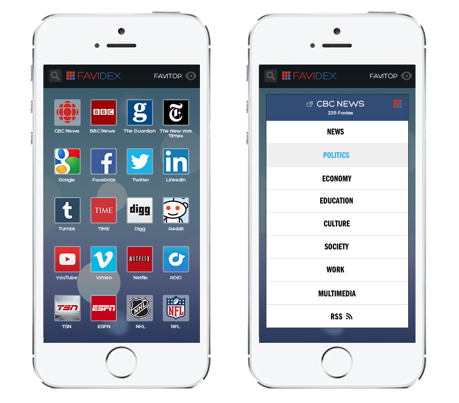

My Story
Hi Lucinda,
I made this website to express my deep interest in the Digital Marketing Manager role at Waterloo EDC. I have 10+ years experience shaping engaging digital experiences and would love to guide Waterloo EDC's website strategy, brand, and digital advertising, to attract investment to a region that I am passionate about.
I bring to the table an understanding of digital marketing ideas and best practices, learned across 6 tech companies (currently at ApplyBoard), as well as a familiarity with the region's ecosystem, having led Velocity's marketing and communications for 3 years. These experiences, combined with creative ideas and a collaborative mindset, would allow me to make a unique impact in this role. I would love to chat more about this opportunity!
Best regards,
Jude
Jobfairr is a careers page aggregator designed to make it easy to discover ~750 tech companies in 10+ cities across Canada and keep tabs on their job openings. More than 10,000 Canadians have used this job search tool to check startup career pages, view locations on a map, browse tags, and use job boards. I dedicated 750+ hours to designing, coding, populating, and marketing this user-friendly and fully responsive Ruby on Rails app while working full-time.
Favidex is a visual bookmarking web application that facilitates faster and more user-friendly web browsing experiences. I designed a comprehensive set of UI wireframes in Photoshop and built a prototype using HTML, CSS, Javascript, and Ruby on Rails. I launched a photo blog in parallel to development (favidex.com), and engaged an audience of 45,000+ fans across Twitter, Facebook, Google+, Pinterest, and Tumblr, tracking engagement through Google and HootSuite Analytics.

